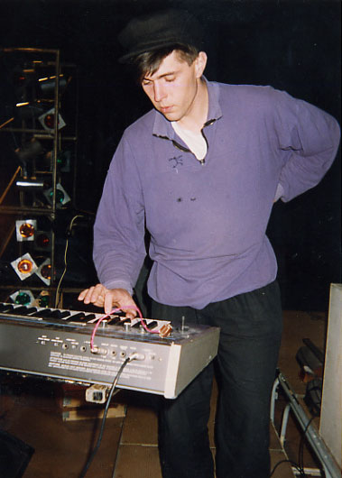
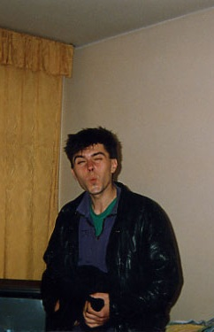

1993 m
Darius Burokas
Aš buvau geras vaikas. Labai intriguojančių atsitikimų nepamenu. Darželyje paprasčiausiai neklausydavau. Išeinu iš namų ir einu per draugus. Pas kiekvieną randu kažkokį užsiėmimą. Pareinu namo, tėvai jau į miliciją skambina. Gaunu į kailį, tuo ir baigiasi. O būna į žygį išeinu su vyresniais vaikais...
Gyvenau Kalvarijų gatvėje, ten buvo Šeškinės kalnai. Iš jų parsirasdavau visas šlapias - gaudavau į kailį... Draugeliui su plyta per galvą užvažiavau. Mokykloje korėme kates. Bet tai jau sadizmas. Turėjome kačių korimo kamerą. Ten atlikinėdavom bandymus. Bandėme karti, tik nedąsiai. Nelabai mums pavyjdavo. Bandydavom iš kokio aukščio galima mesti, kad jos neužsimuštų...
Ketvirtoje-penktoje klasėje svajojau tapti muzikantu. Buvo žvėriškas noras groti. Vos iš proto nėjau. Įsivaizdavau save su gitara ant scenos "varinėjantį". Ir ta svajonė išsipildė. Kokį aš tada save mačiau, toks esu. Na, nešokionėju ant scenos, bet svajonė beveik išsipildė. Ir apskritai - svajonės pildosi. Aš labai mėgstu svajoti...realiai.
Kartą Senelis Šaltis man padovanojo akordeoną. Tada tėvelis mokė groti. Mokė ilgai, kažkiek išmokė. Mano tėvas ir dabar akordeonu groja, o mama anksčiau. Tai va, mamulė užrašė mane į akordeono klasę B.Dvariono mokykloje. Išlaikiau pirmuosius egzaminus ir mokiausi šiaip ne taip. Iš pradžių groti nepatiko, bet po to susidomėjau. Buvo labai įdomi kompanija. Tada ir su Lukošium susipažinau. Visi buvo iš aštuonioliktos mokyklos: Pakalniai abudu, Grigaitė, Ragėnas, žodžiu labai faina chebra.
Aš buvau klausęs "Foje" dainų irašų. Visai nieko. Tik "Mėnulio veidas" baisiai nepatiko. Tokia estrada!!! Lukošius sako: "Kaip tau juosta?" Aš nežinojau, kad ten Andrius, sakau: "Nieko, tik "Mėnulio veidas" vemti verčia". O Lukošius: "Andriau, Andriau, paklausyk, ką jis sako!!!". Andrius: "Vemti sveika". Taip ir susipažinom.
Groti pakvietė, kai jau buvau vienuoliktoje klasėje. VISI-ukuose kabėjo skelbimas: "Reikalingi muzikantai". Kitą dieną mokykloje rašėm rašinį. Parašėm, aš einu pro duris - ant palangės sėdi Andrius ir sako: "Viskas, važiuojam groti". Pakeliui parašė, ką reikės man groti. Susigaudžiau. Vis vien nieko nesigirdėjo. Buvo du klavišiniai instrumentai. Vienais aš, o kitais Kriščiūnas grojo. Abudu su kostiumais... Geras koncertas buvo: aš pirmą kartą ir iš lapelio, o Kriščiūnas klavišiniais visai groti nemoka. Aš spaudžiu akordą, Algis, žiūrėdamas į mane, - tą patį. Nelabai pataiko. Po koncerto, grįžtant namo, davė dėžę obuolių, tai parsivežiau namo. Viduržiemį obuoliai šventė.
Svajojome iškilti kaži kaip, kad apie mus žinotų visi. Ne mane, o grupę. Taigi, kai "Moksleivyje" nuotrauka pasirodė, Jėzusmarija - lažova, betgi šventė buvo.

1993 m
Kodėl pasivadinome "Foje", niekas nežino. Ir kam tai žinoti? Koks skirtumas? Juk ne žodis apibrėžia grupę, o grupė žodį.
Buvo laikas kai su Lukošium senamiestyje tryniausi. Prie "Vaivos" ir "Ledainės". Ten savo palangę turėjome. Andrius tokių dalykų nemėgo, o Kriščiūnas iš viso... (Taigi Lukošius buvo išmestas, o aš dar (naujai) negrojau. Yra tokia grupė "Šiaurės kryptis", tai ten visi būriavosi). Tai va - "Ledainė". Mes "Vaivos" nemėgom. Bet geriausia vieta - Jaunimo sodas. Žiemą vasarą, ar šilta, ar šalta prie Vilnelės buvo gatvių universitetai - bet ir jie baigėsi.
Andrius yra labai sudėtinga, prieštaringa asmenybė. Kai pirmą kartą pamačiau, buvo jėga, fainas įspūdis. Tada aš jo nepažinojau. Tas įspūdis buvo iki tada, kol aš baigiau vienuolika klasių: jaunas vaikinas, kirptas ežiuku, gerai aprengtas, sklinda iš vidaus energija, dainos geros, nuoširdus - tiesiog jokių priekabių. Galbūt todėl taip staiga "Foje" iškilo. Ką rašo Andrius: žodžius, melodiją - viskas atspindi jo vidinę būseną. Jis už mane metais vyresnis buvo, aš nesuprasdavau, ką jis... Pavyzdžiui, prieš Prancūziją pradėjom naują programą, o man kažkaip "nedakepdavo" žodžiai. Būdavo faina groti, bet minties nepagaudavau. Pradėkim nuo "Žodžiai į tylą". Po metų man pradėjo ryškėti. Gal man lėtai "daeina" ?
Gyvendamas žmogus pereina tam tikrus etapus, ir Andrius, eidamas per tuos etapus, savo dainose pasako, ką jis jaučia. O kadangi aš žygiuoju metais iš paskos, tai man biškį...cha-cha! Bet atrodo, kuo toliau, tuo labiau nyksta metų skirtumas. Tiesiog pasiveju. Prieš pusę metų (kai vedžiau), o tuo labiau rugpjūčio 19-tąją, kai gimė dukra, požiūris į gyvenimą pasikeitė. Žodžiu, viskas - turbo ! Čiki!!!
Būdamas armijoje, stebėjau viską iš šono, per televizorių. Tada Andrius man pasirodė nebe toks, kaip anksčiau. Jis visuomet sakydavo: "Norim atrodyti kaip vaikinai iš gatvės, papasta chebrytė". O dabar jautėsi noras parodyti, kad tu nesi iš gatvės, esi kažkas kita. Visai nepykau, bet man nesinorėjo kažkuo išsiskirti. Aš buvau gatvės stereotipas. O vėliau, prabėgus metams, kažkaip supanašėjom.
Algis - zaraza! Užkrėtė mane! O iš tikrųjų - gerai, kad yra žmogus, kuris negeria. O dabar ir aš, atrodo, nebegeriu... Kriščiūnas visai negeria ir aš - negeriu. Dabar visai kitaip gyvenu, viskas daug lengviau. Dar su rūkymu reikėtų baigti. Pradėjau daugiau galvoti apie tekstą, apie muziką, apie grojimą, galiu susikaupti ir susikoncentruoti, ir geriau groti. Nors geras grojimas priklauso nuo nuotaikos. Bet jei negeriu, tai iš ryto nebūna bloga ir nuotaika gera. Pakilo moralė. Galbūt ne todėl, kad negeriame, bet atėjo Kriščiūnas ir Lukošius. Sugrįžo sena aštuonioliktosios vidurinės dvasia ir senas grojimas.
Darius
(ištraukos iš knygos "Aš atsisuksiu atgal")